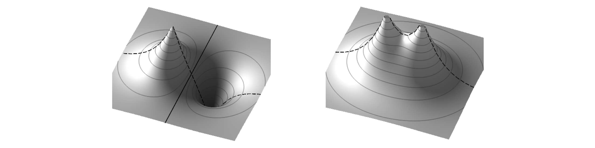
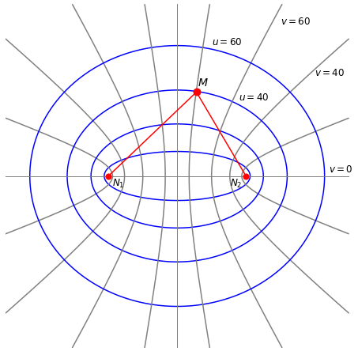
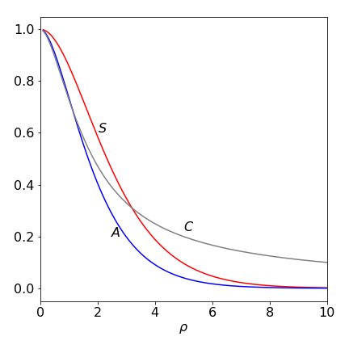
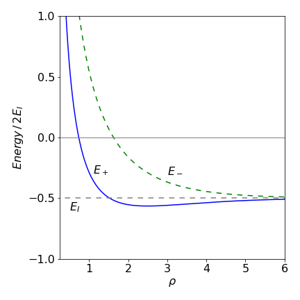
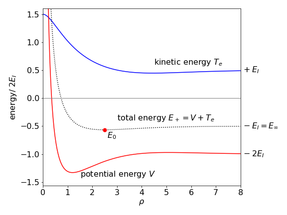

Calculating the energy of a chemical bond using molecular orbitals¶
# import all python add-ons etc that will be needed later on
%matplotlib inline
import numpy as np
import matplotlib.pyplot as plt
from sympy import *
#from scipy.integrate import quad,odeint,solve_ivp
#from scipy import linalg
#from scipy.optimize import fsolve
init_printing() # allows printing of SymPy results
plt.rcParams.update({'font.size': 16}) # set font size for plots
12.1 Molecular orbitals¶
Molecular orbitals (MO) are orbitals that extend over the whole molecule as opposed to being located on or between particular atoms. In \(\mathrm{H_2^+}\), one of the simplest molecules, the MOs are formed by bringing the two lowest energy atomic orbitals (wavefunctions), \(\varphi_{sA}\) and \(\varphi_{sB}\) together. In the situation that the MO is \(\varphi_{sA}+\varphi_{sB}\), the atomic orbitals are in phase and a bond is formed; constructive interference has occurred between the two wavefunctions. The other simple combination, \(\varphi_{sA}-\varphi_{sB}\), leads to destructive interference and little electron density between the nuclei. Such a combination is known as an anti-bonding MO. The amplitude of the two MOs are shown in Figure 29.
The geometry of the \(\mathrm{H_2^+}\) molecular ion is defined as a function of the separation \(R\) of the protons, \(N_1\) and \(N_2\), and of the electron \(M\) with each proton, Figure 30. One possible separation of the electron from the two protons is shown but the electron can occupy any position in space. The interaction between the electron and the proton is electrostatic and attractive while that between the two protons is repulsive. The electron has kinetic energy as do the nuclei, but to make the calculation easy we assume that the nuclei do not vibrate but have fixed positions on the z-axis and so have no kinetic energy. This approach is called the Born -Oppenheimer approximation and is a good approximation when nuclear motion is far slower than that of electrons. This is due to the difference in their masses; the ratio of mass is at least \(m_p /m_e = 1836\).

Figure 29 Bonding (left) and anti-bonding combination of orbitals. Note the nodal plane in the anti-bonding orbital where the electron density falls to zero and the also change in sign of the orbital. All of the bonding orbital has the same sign. The dashed line shows what the outline of the orbitals would look like if plotted through a line containing the nuclei.
In the Schroedinger equation, \(H\psi = E\psi\), the Hamiltonian operator \(H\) represents the kinetic and potential energy of the nuclei and electron (of mass \(m\)). The equation is
The first term in brackets represents the kinetic energy of the electron, where \(\bar P\) is the momentum operator (\(\displaystyle -i\hbar\frac{\partial}{d\tau}\)), the second term the potential energy \(V\) between the electron and protons and between the two protons. The coordinates of the electron are written as \(\bar r\) which is a vector defining its position anywhere in space around the two protons. At some juncture, this has to be related to \(r_1, r_2\), and \(R\). The total potential energy between the electron and the two protons is
and each term in \(V\) represents an electrostatic interaction. For clarity, the scaling term \((1/4\pi\epsilon_0\)), which would multiply \(V\) to convert it into SI units, is ignored. The first term in \(V\) is the attractive interaction between the electron and proton one, (at position \(N_1\)) and which are separated by \(r_1\), the second term is the similar interaction between the electron and proton two, and the third, the repulsion between the two protons. The full Schroedinger equation is therefore
The energy is calculated with the variational principle using a linear combination of atomic orbitals as the basis to form \(\psi\). The orbitals are chosen to be those of the hydrogen atoms based on proton one and two, and are \(\varphi_1\) and \(\varphi_2\) respectively and make the linear combination \(\psi=c_1\varphi_1+c_2\varphi_2\). The atomic wavefunction for a hydrogen atom is
where \(a_0\) is a constant called the Bohr radius \(\displaystyle a_0=\frac{4\pi\epsilon_0\hbar^2}{me^2}=52.92\) pm. Substituting \(r_1\) and \(r_2\) for \(r\) produce two atomic orbitals \(\varphi_1\) and \(\varphi_2\).
The energy of the lowest level of the H atom can also be calculated from the Schroedinger equation. The equation is
where \(\bar r\) is the vectorial (radial) distance of the electron from the proton. The lowest energy is \(-e^2/2a_0\) and the ionisation energy, being positive is \(E_I=e^2/2a_0\). In SI units
where \(R_H\) is the Rydberg constant in cm\(^{-1}\).
To find the energies of the H\(_2^+\) ion equation 61 is used. From the variational calculation (see Section 9) the bonding \(E_+\) and anti-bonding energies \(E_-\) are
where \(S\) is the overlap integral, and \(H_{11},\, H_{12}\) are the energy expectation value integrals. These are calculated next. These energies are functions of the internuclear separation. This may seem contradictory, as it was stated that \(R\) was constant; however, this is only for the purpose of calculating the energy in the Born -Oppenheimer approximation. In this calculation, the electrons are allowed to move to find their minimum energy at any inter-nuclear separation \(R\). This is then changed and the energy recalculated. This makes the energy a function of nuclear position \(R\), but not the electron’s position \(r\), and thereby the potential energy curve is obtained. If the motion of the electrons and nuclei could not be separated then it would not be possible to draw a potential energy curve because the energy would depend on both \(r\) and \(R\).
In calculating the energy, equation 61, three integrals have to be evaluated. The overlap integral \(S\) is easy to understand, its name describes what it is, which is the extent to which the two atomic orbitals occupy the same region of space: In symbolic form this is
and from now on, the complex conjugate will be ignored because the wavefunctions are real. Thinking of the integral in simple terms as an area, the ‘area’ is that of the product of the two wavefunctions and is obviously large only where they overlap. Integration here is written with symbolic coordinates \(d\tau\) that represents a volume element of three-dimensional space. When the coordinates are included properly, \(S\) becomes a triple integral and \(d\tau\) given properly.

Figure 30. The geometry of the H\(_2^+\) calculation and prolate spherical coordinates. The distance between the two protons \((N_1, N_2)\) is \(R\), and that between the protons and the electron (\(M\)) is \(r_1 ,r_2\) respectively. The origin of the coordinates is at \(R/2\) so that \(N_1\) is at position \((x, y, z) = (0, 0, -R/2)\) and \(N_2\) at \((0, 0, R/2)\). The electron can take any position in \((x, y, z) = (u, v, \theta )\) space with a probability determined by the wavefunction. The ellipses and hyperbola show some of the values for the elliptical coordinates used to solve the problem. Specifically these are prolate spheroidal coordinates and are rotationally symmetrical around the z-axis. The hyperbolas are lines in \(v\) the ellipses in \(u\). The equations are \((x/\cosh(u))^2 + (y/\sinh(u))^2 = (R/2)^2\) and \((x/\cos(v))^2 - (y/\sin(v))^2 = (R/2)^2\).
The \(H_{11}, H_{22}\), and \(H_{12}=H_{21}\) integrals are different as they contain the energy (Hamiltonian) operator \(H.\) In symbolic form these integrals are
which contains both kinetic (\(\bar P^2/2m\)) and potential energy terms which are the electron - proton interaction, \(V_{en}=-q^2/r_1-q^2/r_2\) and proton - proton interactions \(q^2/R\). The electronic charge is \(q\) and is used instead of the conventional \(e\) because of possible confusion when exponentials are used later on. The other integrals, \(H_{22}\) and \(H_{12}\) are formed in a similar way.
The calculation now involves evaluating these integrals and to calculate the energies \(E_+\) and \(E_-\) and plot them vs internuclear separation \(R\). To make the equations simpler, two things are done. First, the coordinates are changed to prolate spheroidal ones, second, reduced distances are used, and these are defined in terms of \(a_0\) the Bohr radius:
The wavefunctions become
12.2 Calculating the overlap integral S¶
Substituting for the atomic wavefunctions with the reduced distances and simplifying gives
To integrate over all coordinates \(d\tau\) we must know how this and \(\rho_1\) and \(\rho_2\) are related. The protons and electron are in real space so that \(d\tau\) is a volume element,
and therefore the integral is three dimensional; a triple integral. The integral has coordinates in distances \(r_1, r_2\) and \(R\) which are presently in Cartesian \((x, y, z)\) coordinates which makes the calculation very difficult. Fortunately, in this problem the maths works out far easier if elliptic coordinates are used, which means transforming \((x, y, z) \to (u, v, \theta)\). The angle \(\theta\) is that around the z-axis. These new coordinates are used because they have an origin on each atom, see Figure 30. In this new coordinate system the volume element, or the Jacobian is,
and the distances \(\rho_{1,2}\)1 are defined in terms of \(u\) and \(v\) as,
All the elements with which to calculate the solution are assembled; To calculate the integral, first substitute for \(d\tau\) into the \(S\) integral equation 66 and then substitute for \(\rho_1\) and \(\rho_2\) to give
and the limits are \( u =1\to\infty, \quad v=-1 \to 1, \quad \theta=0\to 2\pi\) and with some simplification the integral is
Note the order of the limits with respect to the order of integration; this is \(u, v,\theta\). The integral in \(\theta\) can be separated out, because there is no term in \(\theta\), giving
This is a standard integral and using Sympy produces
where \(\rho = R/a_0\). The result shows that the overlap decreases with separation of the nuclei because the exponential decreases more rapidly than \(\rho^2\) increases.
u, v, rho = symbols('u, v, rho',positive=True)
eq = (rho**3)* exp(-u*rho)*(u**2 - v**2) /4 # S overlap integral
simplify(integrate( integrate(eq,(u,1,oo)), (v,-1,1) ) ) # double integral
12.3 Calculation of the self-energy integrals \(H_{11}\) and \(H_{22}\)¶
The self-energy \(H_{11}\) or equivalently \(H_{22}\) is the energy the electron and proton 1 will have as if they formed an atom whose energy is influenced by a nearby positive charge, which is that of the other proton. Most of the calculation of this energy is done before actually calculating an integral but is complicated by the fact that the momentum \(\bar P\) is included in the Hamiltonian and this has to be dealt with. The equation is
Understanding what each integral represents helps in their solution. Remember that as \(H_{11}\) is calculated only the electron and proton 1 are involved. The \(\bar P^2/2m\) operator in the first integral represents the electron’s kinetic energy and the second integral its potential energy with respect to proton 1. The first two integrals must, therefore, represent the lowest energy of a hydrogen atom, or minus one times the ionization energy, \(-E_I\), where \(E_I = q^2/2a_0\) or approx \(13.6\) eV.
The fourth integral is also easy to solve; the electron’s atomic wavefunction \(\varphi\) (equation 65) does not depend upon the separation \(R\) of the nuclei, but only on the electron’s position \(r\). This is because we have defined the nuclei to be fixed in space and so \(R\) can be taken out of the integral. Therefore, because the wavefunctions are normalised the integral is,
So far the integral is
where the third integral \(C\) is called the Coulomb Integral and is
This is calculated in a similar manner to the overlap integral. The Coulomb integral describes the electrostatic potential energy between proton 2 and the charge distribution of the electron when it is associated with the 1s orbital around proton 1. Substituting for the wavefunctions gives
There are distances in \(\rho_1\) and \(\rho_2\) so it is necessary now to use the prolate spherical coordinates;
where the integral over \(\theta\) was evaluated in the last step. Again using Sympy gives
u, v, rho, q, a0 = symbols('u, v, rho, q, a0',positive=True)
eq = (q**2*rho**2/(2*a0))* exp(-(u+v)*rho)*(u**2 - v**2)/(u - v) # C Coulomb integral
simplify(integrate( integrate(eq,(u,1,oo)) ,(v,-1,1) ) ) # Double integral
The Coulomb Integral \(C\) is large at small internuclear separation, where \(1/\rho\) is large, and decreases to zero at large \(\rho\), when \(1/\rho \to 0\) and the exponential term is small. Plotting the energy \(H_{11}\) as a function of \(\rho\) shows that \(H_{11}\) is large at small separation because \(C\) is large, but constantly decreases and then reaches a constant value of \(-E_I\) at large proton separation.

Figure 30A. The integrals \(S\) overlap, \(A\) exchange and coulomb \(C\) integrals vs, \(\rho\). The Coulomb integral does eventually become zero but much more slowly than either \(S\) or \(A\). (\(q\) and \(a_0\) were each set to unity.)
12.4 Calculation of interaction energy integral \(H_{12}\)¶
Integrals such as \(H_{12}\) are said to ‘cause’ the interaction between the electron and each nucleus and lead to the formation of the bond. This is because this integral measures the interaction of the electron on one atom with the other atom and bonds can only be formed if electrons interact between atoms.
Following the procedure for \(H_{11}\) the integral to be evaluated is
Because the atomic orbitals \(\varphi_1\) and \(\varphi_2\) form the basis set for our calculation the first of the three separate integrals is related to the ionization energy of the atom just as in the integral \(H_{11}\). However, the calculation is not the same because the second orbital is \(\varphi_2\). To evaluate the integral, it is multiplied by 1 in the form of the wavefunction normalization, \(\int \varphi_1\varphi_1d\tau = 1\). This cunning ‘trick’ is valid! The integral is rearranged as follows,
In the second step, the integrals are merged as the integration is over the same coordinates, represented as \(d\tau\). In the third step, the integrals are separated after rearranging terms and in the last step, they are identified as an integral already calculated. The first integral is the same as in equation 69 and the second is the overlap integral \(S\), equation 68a.
The second integral of \(H_{12}\) has the form
and is called the resonance or exchange integral and is not zero. It expresses the possibility of the electron moving from the neighbourhood of one proton to that of the other and is a purely quantum effect: it has no classical counterpart. The variation of \(A\) with separation \(\rho\) is shown in figure 30A. Question 87 suggests how to calculate the exchange integral \(A\).
If at some time we could start the electron in orbital \(\varphi_1\) and compel its wavefunction at later times to have the form \(c_1\varphi_1 + c_2\varphi_2\), so it is ‘shared’ between two orbitals, then the values of \(c_1\) and \(c_2\) would oscillate with time. This means that after a certain time interval the wavefunction would be \(\varphi_2\) and shortly after this, it would return to \(\varphi_1\) and so on. This quantum mechanical oscillation is, by analogy with the mechanical oscillation, called resonance.
The total integral is therefore
where \(R\) is the internuclear separation. If the energy \(H_{12}\) is plotted it has a minimum energy at a distance somewhat shorter than that measured for the chemical bond, and is zero at large internuclear separation. It is zero because the overlap integral is zero at large \(\rho\) as is the resonance integral, see Q 87 for further calculations.
Plotting the energies \(E_+\) and \(E_-\) vs \(\rho\) produces Figure 31. It is clear from the shape of the curves that a minimum in the energy exists for the \(E_+\) and not for the energy \(E_-\). The minimum energy calculated and hence bond length occurs at \(\approx 2.5a_0\) or \(130\) pm. The experimental value is \(106\) pm (Herzberg 1950), so this simple model produces a reasonably good result.

Figure 31. Energies \(E_+ , E_-\) (dashed green line) vs reduced internuclear separation \(\rho = a_0R\) and energy in units of ionization energy \(E_I\). (In this plot \(q=1, a_0=1\))
12.5 The origin of the Chemical Bond and the Virial Theorem.¶
The chemical bond occurs due to a lowering of the electronic potential energy.¶
When the separation between the protons is reduced from a large value, the energy of their mutual (electrostatic) repulsion increases. The fact that the total energy of H\(_2^+\) passes through a minimum as a bond forms means that the electronic energy decreases faster than the repulsion \(q^2/R\) increases but at very short distances \(R\to 0\) the nuclear repulsion dominates. At any bond length, the total energy \(E\) has to be the sum of the electron’s kinetic and potential energies, \(E=\langle T\rangle + \langle V\rangle\), hence the question is: does the lowering of the electronic energy arise from a reduction in the electronic potential energy or a lowering of the kinetic energy or from both?
To answer this question, the Virial Theorem can be used. This is a theorem from the study of mechanics and is extremely powerful as it can be applied to any (bounded, conservative) mechanical system (Goldstein 1980, Hamill 2014) such as a planet orbiting its sun. The theorem is statistical in nature because it calculates the average kinetic energy \(\langle T\rangle\) (over time) and shows that this is proportional to the average potential energy \(\langle V\rangle\), i.e. \(\langle T\rangle \propto \langle V\rangle\). In the case that the potential is a power law \(V(r)\propto r^{n+1}\) the relationship becomes
In the H\(_2^+\) molecule the kinetic and potential energy can be determined rigorously. To do this the variation of the total energy \(E\), with respect to the positions of the nuclei must be known. In the special case of a diatomic molecule the kinetic energy of the electron \(\langle T_e\rangle\) and the potential energy \(\langle V\rangle\) are given by (C. Cohen-Tannoudji, B. Du, F. Laloe, ‘Quantum Mechanics’ vol 2)
Using results already calculated, Figure 32 shows that both the kinetic and potential energy have a minimum in the region of the bond but that the decrease in kinetic energy is very small compared to that in the potential energy. The minimum in total energy when the bond is formed is at \(\rho \approx 2.5\), see dotted line in Figure 32, and is \(E_+\), see Figure 31. The decrease in potential energy when the two nuclei come together therefore dominates the stabilization of the chemical bond because the kinetic energy is rising slightly at the bond minimum but the potential energy is falling rapidly. If the kinetic and potential contributions to the energy of the anti-bonding orbital \(E_-\) are calculated, the potential energy still shows a small minimum but this is dominated by a large positive kinetic energy contribution, leading to no overall minimum in the energy.

Figure 32. The kinetic energy \(T_e\) of the electron and the potential energy \(V\) in H\(_2^+\) vs reduced internuclear separation \(\rho\). The total energy \(E_+\) is the dotted curve and the dot shows the minimum energy.
At the minimum energy the gradient \(dE/dR=0\) and then \(\langle T_e\rangle_0 = -E_0;\langle V \rangle_0 = 2E_0 \), where the zero subscripts indicate the minimum energy. When the nuclear are far distant from one another only atoms exist and again \(dE/dR=0\) and in this case similarly \(\langle T_e\rangle_\infty = -E_\infty;\langle V \rangle_\infty= 2E_\infty \). Subtracting these pairs of equations gives
which shows that the formation of a chemical bond always involves an increase in the kinetic energy of all electrons and a decrease in potential energy.